Editor de mapas: herramientas de construcción
Vértices, aristas y caras, el clipper, CSG, formas de brush, transformaciones, patches, texturizado, regiones, filtros, capas y modelos: las herramientas de NetRadiant-Custom con sus teclas, menús y diálogos.
Vértices, aristas y caras#
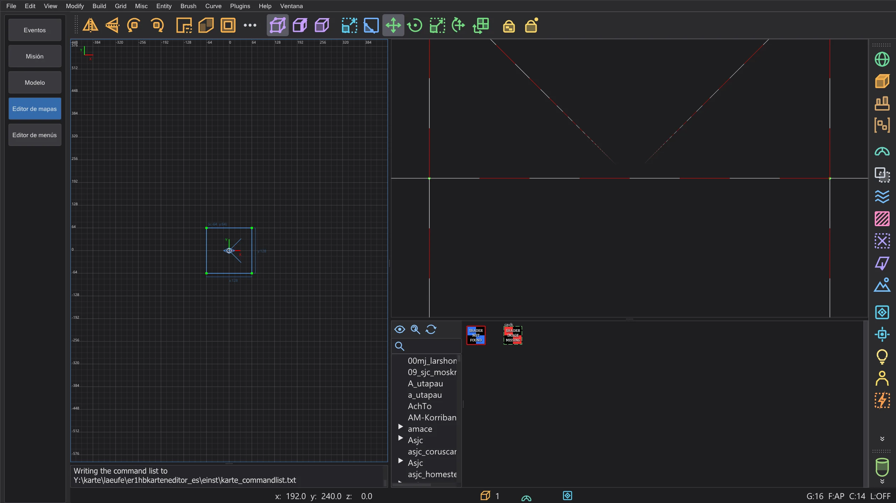
Selecciona un brush o un patch y pulsa V (vértices), E (aristas) o F (caras). Pulsa un punto para seleccionarlo y arrástralo para dar otra forma al brush; el brush se reconstruye a partir de sus puntos como en NetRadiant-Custom. La misma tecla otra vez vuelve a la selección normal. B es la herramienta de construcción (extruir, construir cadenas, clonar), G la herramienta UV para la textura de una cara. Texture Lock (Mayús+T) mantiene las texturas en su sitio mientras mueves brushes.
Clipper#
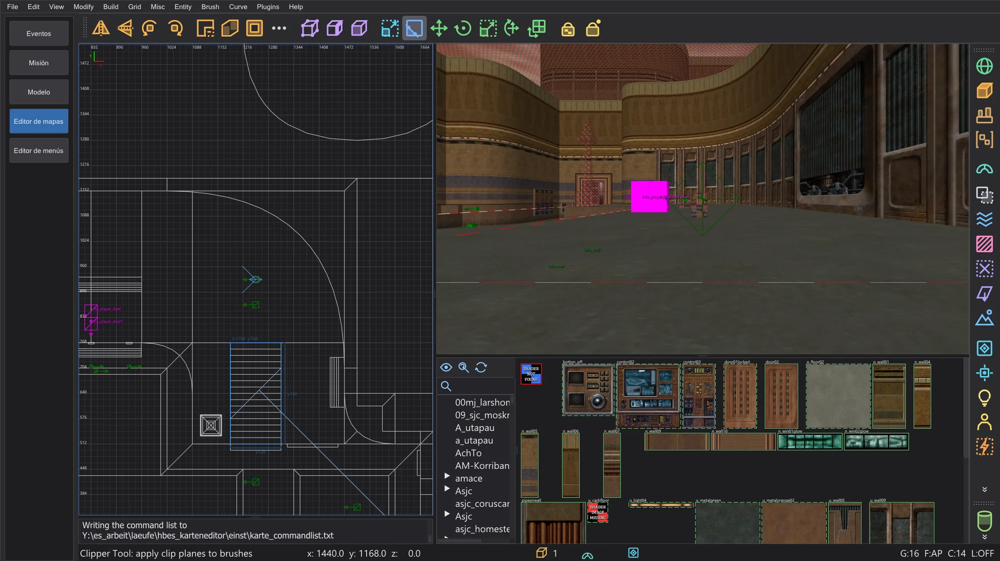
Selecciona brushes y pulsa X. Pulsa hasta tres puntos en una vista 2D, o sobre superficies en la cámara, para definir el plano de corte; arrastra los puntos para corregirlos. Intro corta y conserva un lado, Mayús+Intro divide en las dos mitades, Ctrl+Intro cambia qué lado se conserva. Un doble clic corta o divide, según se fije en la página de preferencias Clipper.
CSG#
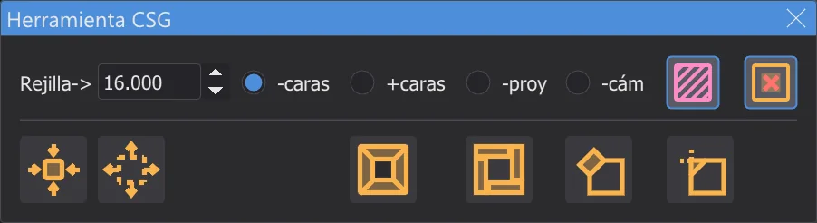
Brush > CSG: CSG Subtract (Mayús+U) recorta los brushes seleccionados de todo lo que tocan, CSG Merge une brushes en un brush convexo, CSG Wrap Merge (Ctrl+U) los envuelve en uno, CSG Intersect (Ctrl+Mayús+U) conserva solo la parte común, Make Room convierte un brush en una sala hueca. Make detail (Alt+D) y Make structural (Alt+S) fijan la marca de detalle.
Formas de brush y transformaciones#
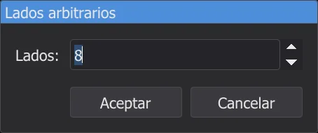
Brush convierte el brush seleccionado en un Prism, Cone, Sphere, Rock o Icosahedron; un diálogo pequeño pide el número de lados. Ctrl+3 ... 9 crean un prisma con tantos lados alrededor del eje de la vista 2D activa. Modify gira y refleja la selección alrededor de su centro, Arbitrary rotation (Mayús+R) y Arbitrary scale (Ctrl+Mayús+S) toman valores exactos. Repeat Transforms (Ctrl+R) repite el último movimiento, giro o escala, Reset Transforms (Alt+R) lo olvida.
Patches#
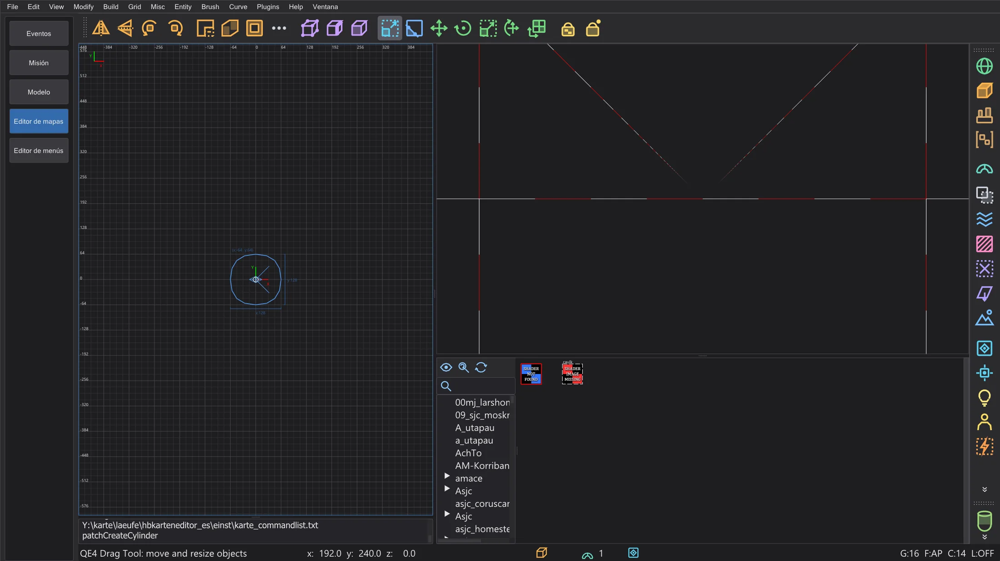
The Curve menu builds patches in the bounds of the selection: plane (Simple Patch Mesh, Shift+P), bevel, end cap, cylinders, cone, sphere and the exact versions with a size dialog. Insert/Delete adds or removes rows and columns, Matrix inverts (Ctrl+I), transposes (Ctrl+Shift+M), redisperses and smooths. Cap Selection (Shift+C) closes the ends, Thicken (Ctrl+T) gives a patch a thickness, Deform adds noise. The texture of a patch: Naturalize (Ctrl+N), invert X and Y, reset. Bridge patch edges (not in NetRadiant-Custom) joins two selected patches with a new patch whose first and last row are exactly the control points of one edge of each (with selected control points the edge that holds them, otherwise the nearest pair of edges with the same number of points) - no seam, one undo step.
Texturizado#
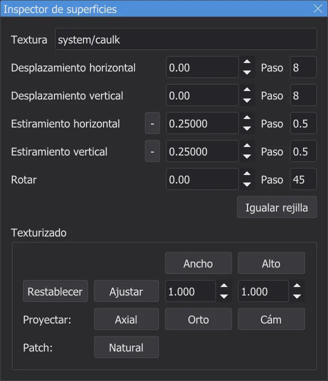
El Inspector de superficies (S) muestra la textura de las caras seleccionadas: desplazamiento, escala y rotación, los pasos para las flechas, ajustar (Ctrl+F) y la proyección (axial, orto, desde la cámara). Sin la ventana, Mayús + flechas desplazan la textura, Ctrl + flechas la escalan, Mayús+RePág / AvPág la giran. Select Textured (Ctrl+Mayús+A) selecciona todas las caras con la textura actual. Con Tags GUI el navegador de texturas tiene etiquetas para ordenar texturas.
Selección, regiones y archivos#
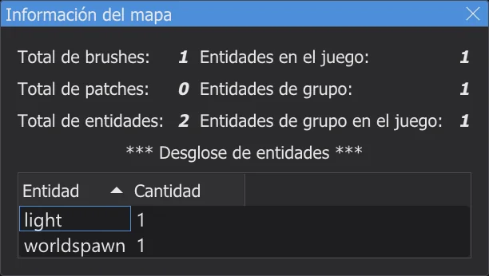
Select inside y Select touching seleccionan lo que está dentro del brush seleccionado o lo toca. View > Region muestra solo una parte del mapa: Set XY (la zona visible de la vista 2D), Set Brush, Set Selection (Ctrl+Mayús+R), Off. File > Save region escribe la región con paredes alrededor y un inicio del jugador, Save selected solo la selección, Import añade otro mapa. Find brush selecciona un brush por su número de entidad y de brush. El mapa se guarda automáticamente cada 15 minutos (página de preferencias Autoguardado).
Filtros#
View > Filter y la barra de filtros de la derecha ocultan tipos de objetos: brushes del mundo (Alt+1), entidades, caulk, clips, líquidos, brushes de detalle, patches, luces, modelos, triggers y más. Algunos botones hacen otra cosa con un clic derecho, como dice su descripción: hacer la selección de detalle o estructural, crear un func_group, ponerle caulk o una textura de herramienta. Invert filters y Reset filters los invierten todos o los quitan.
Capas#
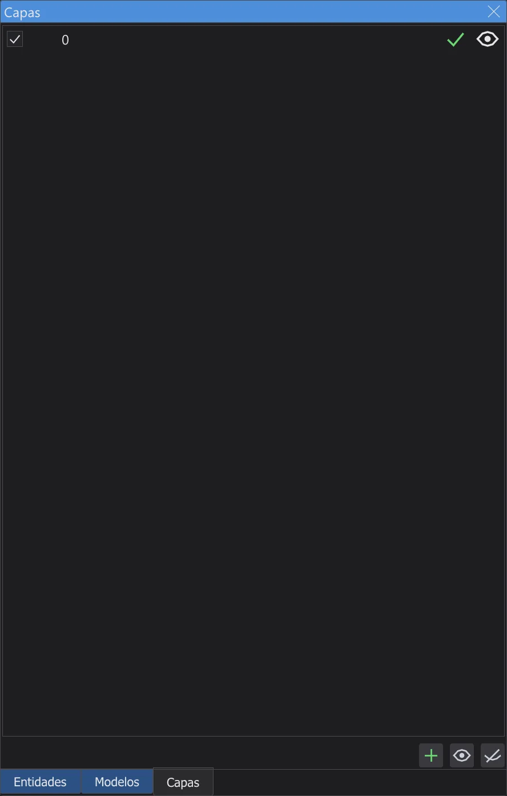
Las capas agrupan partes del mapa. En el Layers Browser (L) creas y renombras capas, las anidas arrastrando, las ocultas o muestras con el ojo y mueves la selección a una capa (Mayús+Q); Ctrl+Q amplía la selección a sus capas. Los objetos nuevos van a la capa actual. Las capas se guardan en el archivo .map como en NetRadiant-Custom.
Modelos#
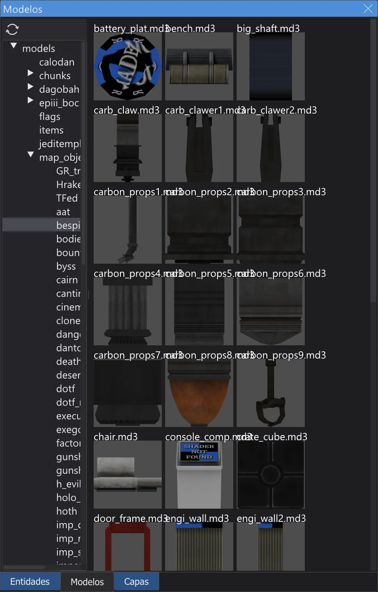
Las entidades como misc_model muestran su modelo (.md3, .glm, .ase) en ambas vistas, con skin, modelscale y ángulos. En el Model Browser (/) un doble clic en una carpeta carga sus modelos; un clic en un modelo se lo da a las entidades seleccionadas, un doble clic inserta un misc_model nuevo delante de la cámara. Refresh models recarga los modelos después de cambiarlos.
Preferencias#
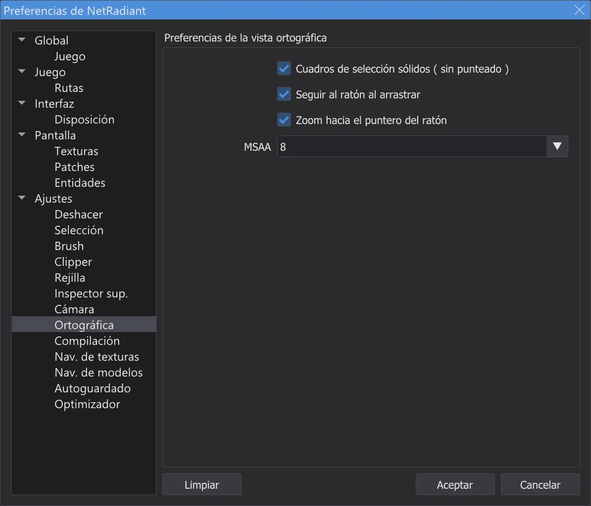
Todas las páginas de las preferencias de NetRadiant-Custom funcionan: Brush (escala de textura predeterminada, tipo de brush de los mapas nuevos, siempre caulk), Rejilla, Deshacer, Ortográfica (selección sólida o punteada, seguir al ratón en el borde al arrastrar, zoom hacia el puntero), Compilación, Ajustes (desplazar tras duplicar, cargar el último mapa). En Juego eliges Jedi Academy o Jedi Outcast, un mod y el modo de mapeado (entidades de un jugador o multijugador), en Rutas la carpeta del juego y hasta cinco carpetas extra. Elegir otro juego pide reiniciar el editor de mapas, como en NetRadiant-Custom.
Menús y ventanas#
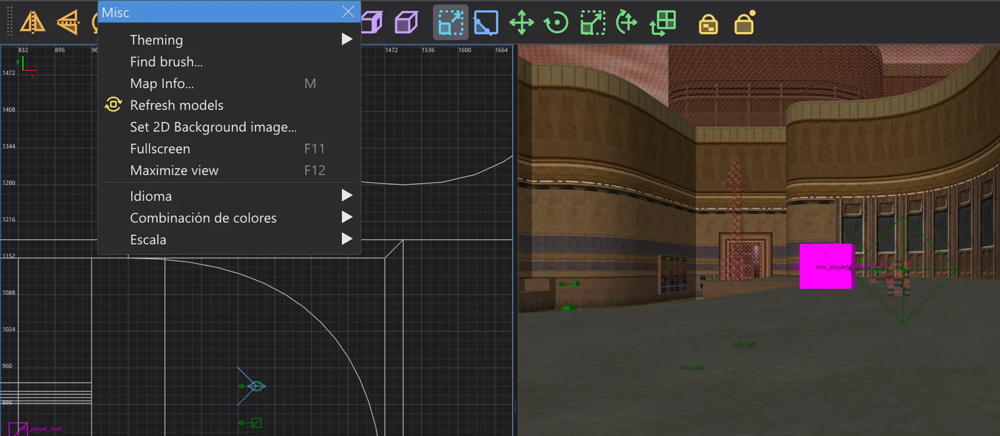
Un clic en la línea discontinua de arriba de un menú lo separa en una ventana que se queda abierta (Menús separables en la página Disposición). Misc > Fullscreen (F11) llena la pantalla, Maximize view (F12) amplía la vista bajo el ratón. OpenGL Font elige la fuente de las vistas 2D y de cámara, Set 2D Background image pone un archivo de imagen en los límites de la selección en la vista 2D activa, para calcarlo. Los plugins se describen en Editor de mapas: plugins, la compilación con q3map2 en Editor de mapas: compilar el mapa.